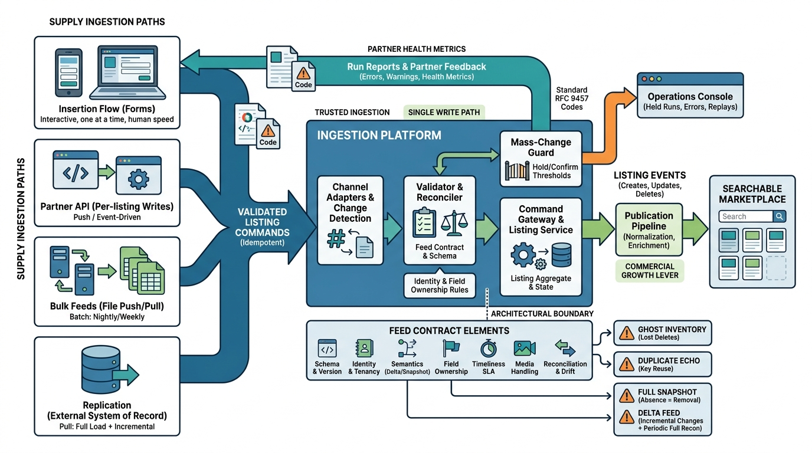

Part III — SUPPLY: Getting Inventory In
Many Doors In: Forms, APIs and Bulk Feeds

Image generated by Google Gemini (gemini-3-pro-image-preview)
Part III — SUPPLY: Getting Inventory In

Image generated by Google Gemini (gemini-3-pro-image-preview)